的很好的近似值，还可以求出许多别的无理数的很好的近似值。
的很好的近似值，还可以求出许多别的无理数的很好的近似值。第三章 用有理数逼近无理数
利用不等式可以求出的很好的近似值，还可以求出许多别的无理数的很好的近似值。
现在问，
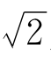
究竟是多少呢？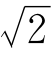
就是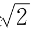
，是2的算术平方根。这样才是最“准确”的回答。因为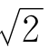
不是有理数，不管你写到小数点后多少位，也没法把它准确地表示出来。可是，最“准确”的回答，有时倒是没有用处的。比如，你到商店去，告诉售货员要买
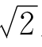
米布，她也许就不知道该给你剪多少。这时，需要的倒是那个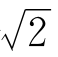
的近似值1.414。你告诉她，你要买1.41米布就可以了。说
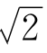
的近似值是1.414，这个1.414是怎么得来的呢？它和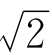
近似到什么程度？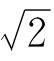
到底比1.414大，还是比它小呢？也许你是从平方根表上查到的，也许你是在袖珍电子计算器上算出来的，但不管怎样，总得有一个可靠的计算方法，才能造出平方根表，才能编出计算器里的程序。
能不能用画图的方法把
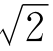
量出来呢？可以，但不会很精确。你要用1米长的直尺，在平整的大桌子上画个正方形，去量它的对角线，才能得到1.414这个近似值。如果作图不细心，还会有更大的误差。想要量出5位有效数字，就要有差不多10米宽的桌子才行。怎么办呢？
我们知道，艺术家要把一块大理石雕成栩栩如生的人像，不是一下子能完成的。他要先砍去一些显然是多余的石头，再在这个基础上按计划刻成大体的人像，然后一次次修整、打磨，最后才能完成一件精美绝伦的艺术品。
求一个无理数的近似值——例如求
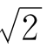
的近似值，也是这样办的。先找一个粗略的近似值，比如1，1就是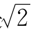
的粗略近似值。当然，你可能会不满意，因为误差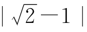
太大了。那么我们就把1修正一下，比方说加上，这样就得到了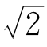
的更好的近似值；再不满意，就再修正一次；这样一次比一次修改得更接近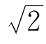
，直到满意为止。这种方法，叫做逐次逼近法。在实际工作和理论研究中，绝大多数的数值计算问题，都是用逐次逼近法解决的。电子计算机是具体实现逐次逼近法的有力工具。
下面，我们就用逐次逼近法，向
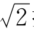
挺进吧！首先，
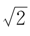
总是比1大，比2小，即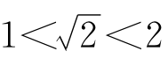
。这就把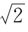
的整数部分定下来了，即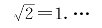
为了确定
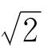
的小数点后第一位数字，你可以把（1.1）2，（1.2）2，（1.3）2，（1.4）2，…相继算出来，算到（1.4）2＝1.96＜2，（1.5）2＝2.25＞2时，你就不必再去算（1.6）2，（1.7）2了。很明显1.4＜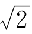
＜1.5.也就是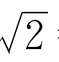
＝1.4…为了再向下求一位，你又得计算（1.41）2，（1.42）2等等这些数了。这样每算几个数，我们便可以多知道
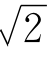
的一位有效数字。虽然进度不快，计算工作量却越来越大。利用不等式的运算规律，可以大大加快计算速度。
比如，我们很容易知道
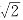
比1大，比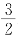
小，因为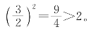
即
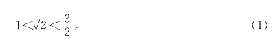
不等式两端是可以同时加上或减去同一个数的。从（1）式的两端各减1，得
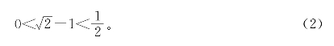
（2）式自乘得
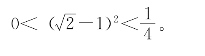
化简，得
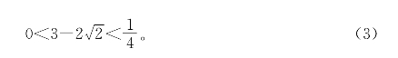
把（3）式的两端再平方，得
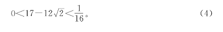
再平方，得
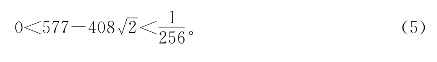
（5）式除以408便得
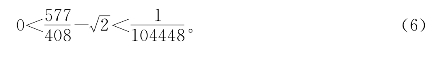
不等式（6）式告诉我们，有理数
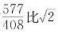
略大一点，误差不超过10－5，即不超过＋万分之一。它是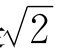
的相当好的近似值，用＋进制小数表示就是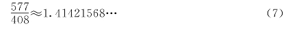
由（6）、（7）可知
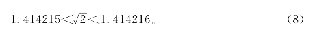
其实，
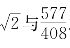
之差比10－5还要小。因为从（8）式知道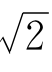
＞1.4，所以（3）式可以改进为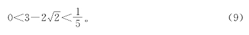
把（9）式平方后再平方，得
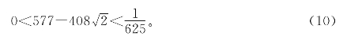
这比（5）式要精确得多了。于是可把（6）式改进为
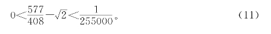
这说明
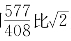
大不到二＋五万分之一，即误差小于0.000004。如果把（11）式的两端再平方一次，就可以求出
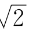
的12位有效数字；再平方一次，就达到20位以上的有效数字了。用这种方法来计算，得到的有效数字不是一位一位地增加，而是成倍地增加。
比如，在平方根表上常常只能查到
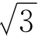
的4位有效数字1.732，也就是说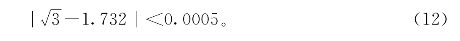
如果我们需要知道
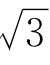
的更准确的近似值，该怎么办呢？只要把（12）式平方一下，得到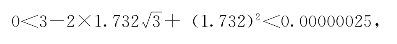
即
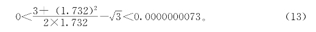
把（13）式中分数的值求出来，便得到的8位以上的有效数字。
把以上的方法总结一下，便得到了计算平方根的一个好方法：
[命题6] 如果x1是的一个近似值，且已知误差≤d，则取
当d＜2x1时，x2是的一个更好的近似值。x2和的误差满足下列不等式：
证明 把不等式≤d的两端平方，得
两端除以2x1，得
当d＜2x1时，，可见x2比x1的误差更小。证毕。
你会想到，如果把不等式两端立方，或自乘4次，5次，可以得到的更好的近似值。这样当然是可以的，不过，平方运算是最简单的；多次平方，也就可以一次比一次更精确。
这种计算平方根的方法里，包含了计算无理数的一般思想，即用有理数逐步逼近无理数的逐次逼近法。逐次逼近法广泛应用于科技工作中遇到的计算问题。
如果要计算立方根，以及更高次的方根，该怎么办呢？我们试试，看用这种方法能不能计算。
当然比1大，比2小，不妨设
也就是
两端平方，得
这里出现了新情况，多了一项！老办法好像行不通了。
如果能把消掉就好了。为了达到这个目的，用乘（18）式的两端，得到
用2乘（18）式和（19）式相加，得
两边同除以3，得
利用（17）式，把＝1＋d代入此式右边，得
从（20）式可知，，所以
把d＜代到（20）式，得
可见比1更接近，其误差不超过。如果想得到更好的近似值，可以从（21）式出发，令
两端再平方，得
用乘（23）式的两端，得
用乘（23）式和（24）式相加，得
利用（22）式把代入上式右端，整理后得到
可见是的更好的近似值，误差不超过。如果把（25）再平方，按上述方法继续运算，会得到的更好的近似值，误差就会降到千分之二以下。
如果把（21）式两端各减去，得
也就是
把上式两端平方后，照类似方法处理，可以把误差降到比还小。再来一次，便得到的5位有效数字了。可见，用这种方法开立方，初始的近似值取得越好，改进得越快。
现在，把求立方根的逐步逼近法，也总结成一个简单的公式：
[命题7] 如果x1是的一个近似值，x1，a都是正数，且已知误差
则取
当时，x2是的一个更好的近似值。x2和的误差满足下列不等式
证明 把｜x1－｜≤d两端平方，得
用乘（29）式，得
用2x1乘（29）式，再和（30）式相加，得
由｜x1－｜≤d可知≤x1＋d，把此不等式代入（31）式的右端，两端同除以，得
显然，当
时，（32）式的右端小于d。
那么，当d为何值时，不等式
能成立呢？
不难看出，只要0≤d＜，不等式的左端就不超过，从而使它成立。可见，x2比x1的误差更小。证毕。
求立方根近似值的问题解决了，那么，求4次方根、5次方根的近似值怎么办？求立方根也就是求方程式x3－a＝0的根。这个方程式解决了，别的高次方程式怎么办？
下面简单介绍一下求高次方程式根的近似值的一种方法。这个方法只用到初中代数里的多项式除法。
举一个例子。考虑三次方程式
当x＝2时，x3－x－8＝23－2－8＝－2＜0；当x＝3时，则有x3－x－8＝33－3－8＞0。因此，在2和3之间原方程式有一个根x*。设
则x1＝2是方程式的近似根，误差d＜1。
用（x－2）2＝x2－4x＋4除多项式x3－x－8：
也就是说
把x＝x*代入（35）。因为x*是根，故左端为0，即
0＝（x*－2）2（x*＋4）＋（11x*－24），
整理得
24－11x*＝（x*－2）2（x*＋4）。
把（34）式代入上式右端，得
24－11x*＝（6＋d）d2。
两端除以11，由d＞0，得
这个式子告诉我们，
也就是d＜。把d＜代入（36）式右端，得
这说明x*在和之间，比原来的估计精确多了。
取
则x2与x*差的绝对值不超过。下一步，还可以再用（x1－x2）2来除多项式x3－x－8，重复进行。
把这个方法总结成一般的公式，便是：
[命题8] 设n次方程式xn＋a1xn－1＋…＋an－1x＋an＝0有一个未知的实根x*，已知x*的一个近似值为x1，其误差为x*－x1＝d。用二次多项式（xx1）2来除xn＋a1xn－1＋…＋an，得商式Q（x）＝xn－2＋b1xn－3＋…＋bn－2和余式Ax＋B。则当｜Q（x1＋d）d｜＜｜A｜时，取
x2是比x1更接近于x*的近似根。误差满足不等式
证明 根据假设写出除法算式
两端用x＝x*代入，因为x*是左端多项式的根，所以可得
0＝Q（x*）（x*－x1）2＋Ax*＋B，
移项，并利用x*＝x1＋d代入上式，即得
当｜Q（x1＋d）d｜＜｜A｜时，右边的绝对值比｜d｜更小。证毕。
这个方法，实质上是我国宋代数学家秦九韶提出的“秦九韶法”，在西方也叫做牛顿法。不过，通常书上介绍牛顿法要用一些微分学的知识，我们只用到了多项式除法。
细心的读者也许会问，如果余式中A＝0怎么办？什么条件下才能保证｜Q（x1＋d）d｜＜｜A｜？这些更深入的问题属于高等数学的范围，这里就不再讨论下去了。
求高次方程式的根，是科技研究中常见的重要问题。现在，人们已研究出很多又快、又准确的计算方法，供电子计算机使用。
练习题三
1.要使我国国民经济总产值在20年内翻两番，平均每年总产值要比前一年增长百分之几？
2.把19页（2）式自乘5次，求得的近似值是多少？
3.取不等式｜x1－｜≤d两端的立方，能不能得到一个比命题6中的公式（14）更好的公式？
4.能不能从命题8取特例推出命题6和命题7？
5.利用命题8，建立一个计算5次根的公式。
6.试证明，反复应用命题6，可以从任一个x1＞0出发，求出的任意多位有效数字。
7.试证明，反复应用命题7，可以从任一个x1＞0出发，求出的任意多位有效数字。
8.求证：方程式xn＋a1xn－1＋…＋an－1x＋an＝0的任一实根的绝对值都小于1＋｜a1｜＋｜a2｜＋…＋｜an｜。